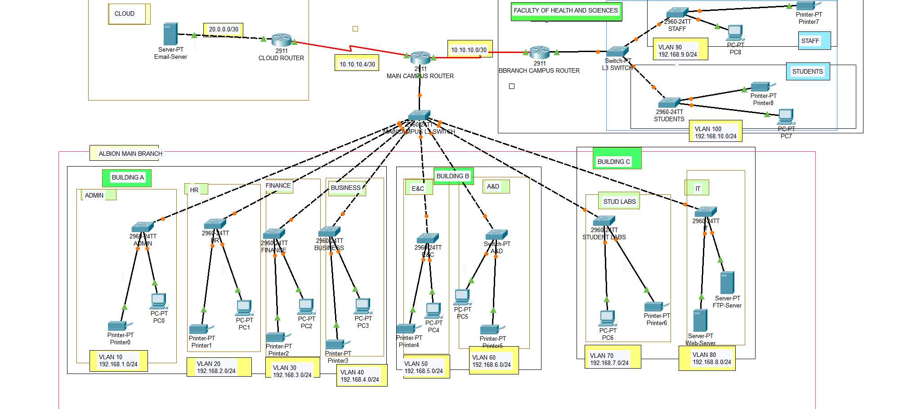
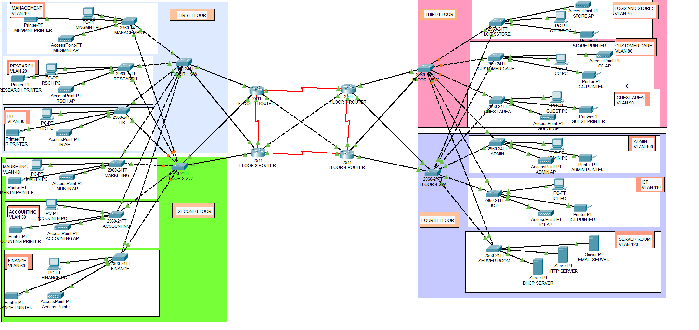
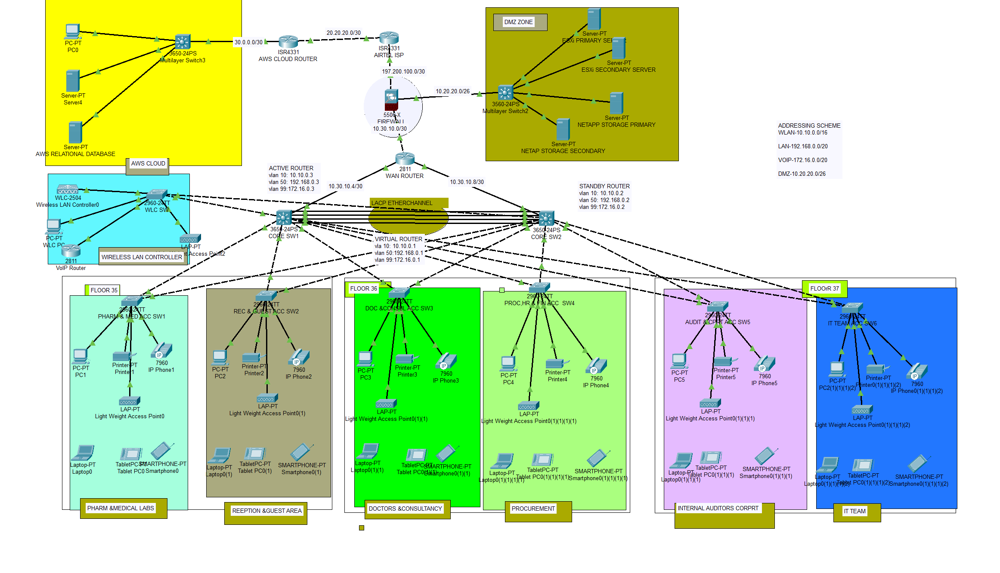
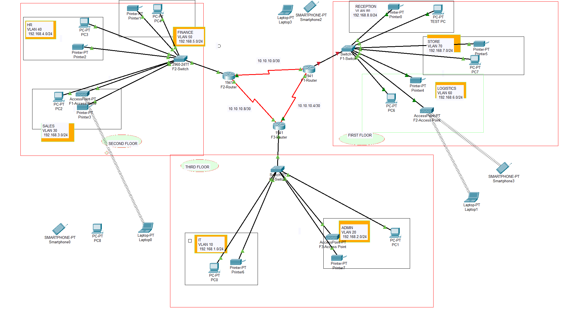
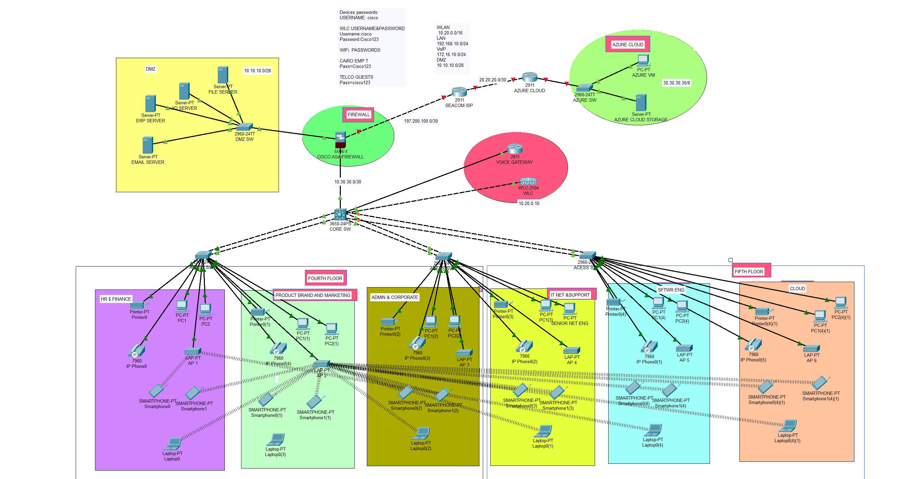
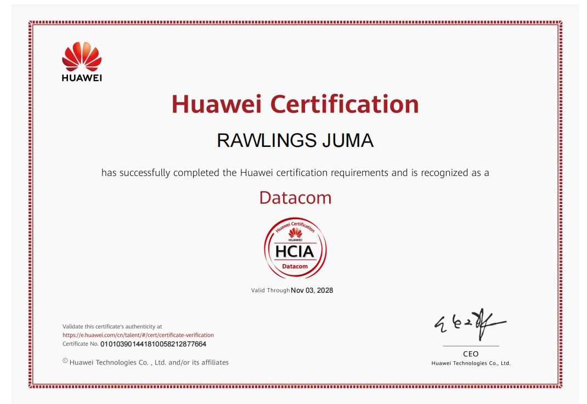
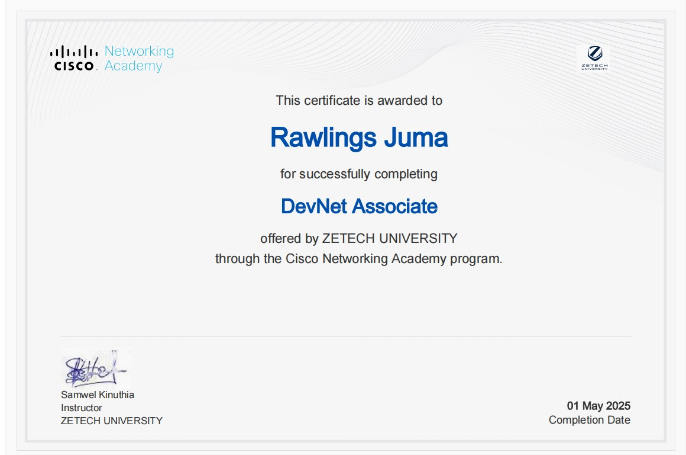
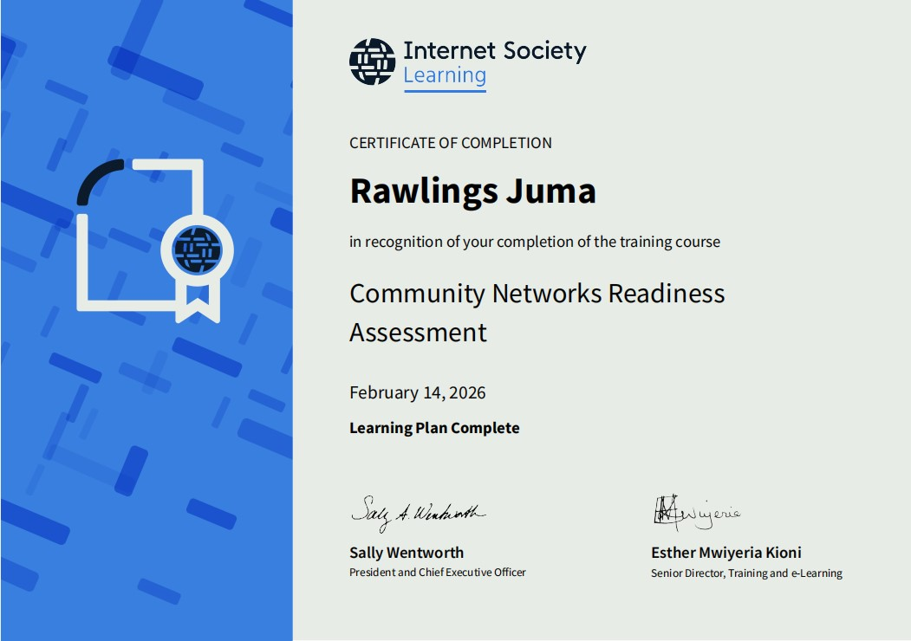
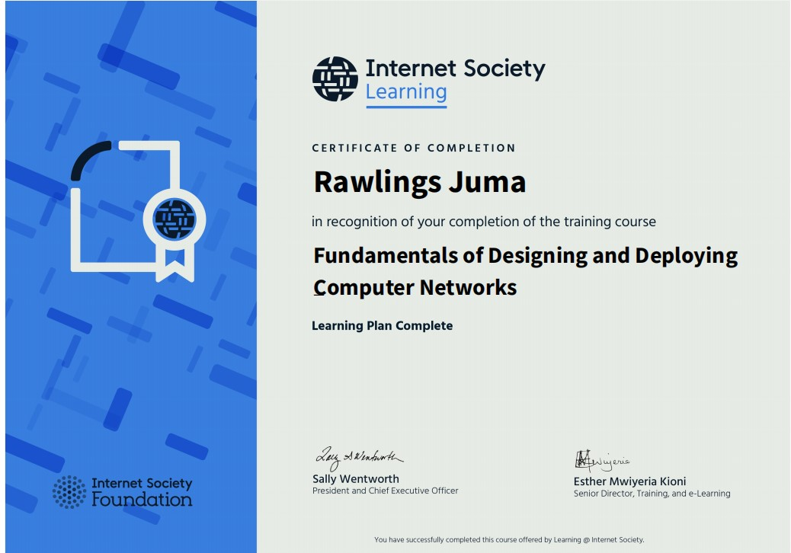
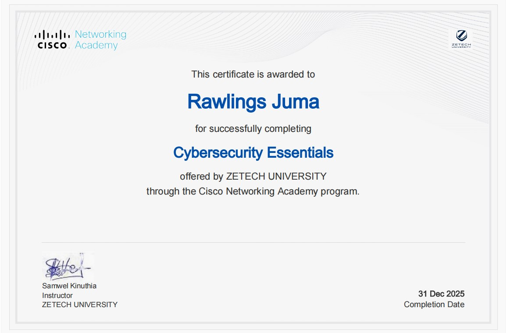

AboutMe
Network Engineer And Cybersecurity Enthusiast
My journey into technology began with a simple curiosity about how systems work behind the scenes. I found myself constantly wondering how devices communicate, how networks connect people across distances, and how everything seems to function seamlessly in the digital world. This curiosity gradually grew into a strong passion for networking and cybersecurity.
As I explored deeper, I became more interested in the structure and design of networks. I started learning about IP addressing, routing, switching, and troubleshooting, and I realized that networking is not just about connecting devices, but about building systems that are efficient, reliable, and secure. Each concept I learned opened the door to a deeper understanding of how real-world systems operate.
Along the way, I discovered the critical role of cybersecurity in today’s interconnected world. I became interested in understanding how systems can be protected from threats and how vulnerabilities can be identified before they are exploited. This pushed me to think beyond just functionality and focus on security, resilience, and trust in network design.
One thing that defines me is my problem-solving mindset. I enjoy facing challenges that require critical thinking and patience. Whenever I encounter a technical problem, I take it as an opportunity to learn, break it down, and find a solution. This approach has helped me grow not only in knowledge but also in confidence.
I also believe strongly in continuous learning. Technology is constantly evolving, and I am committed to evolving with it. I spend time exploring new ideas, practicing what I learn, and improving my skills through hands-on experiences. For me, learning is not just a requirement, but a daily habit.
Beyond the technical aspects, I value discipline, consistency, and growth. I understand that becoming skilled in networking and cybersecurity requires time, effort, and persistence. I am committed to putting in that work and building a strong foundation that will support my future in the tech industry.
My goal is to become a reliable and highly skilled network and cybersecurity professional, capable of designing secure, scalable, and efficient systems that can perform in real-world environments. I am excited about the journey ahead and the opportunities to learn, build, and contribute to the ever-growing field of technology.
Read MoreMy Skills
Networking
- TCP/IP Fundamentals
- OSI Model & Network Architecture
- IP Addressing & Subnetting
- Routing & Switching (VLANs, OSPF basics)
- Network Troubleshooting & Diagnostics
- Network Security Fundamentals (ACLs, Firewalls)
- DHCP, DNS & NAT Configuration
- Cisco Packet Tracer & Wireshark Analysis
Cybersecurity
- CTF Participation (PicoCTF, Zuctf, Reverse Engineering Basics)
- Digital Forensics Fundamentals
- File Analysis & Data Recovery Basics
- Network Security Principles
- Basic Cryptography Concepts
- Linux Command Line for Security Tasks
- Packet Analysis using Wireshark
- Threat Identification & Vulnerability Awareness
Programming
- Python for Automation & Scripting
- JavaScript for Web Development
- Python for General Scripting
- HTML & CSS for Frontend Design
- Basic Problem Solving & Logic Building
Tools & Technologies
- Cisco Packet Tracer (Network Simulation)
- Wireshark (Packet Analysis)
- Linux Terminal (Networking & Security Commands)
- Huawei eNSP ( Network Simulation)
- Git & GitHub (Version Control)
Operating Systems
- Windows (Installation, Configuration & Networking Basics)
- Linux (Parrot, Kali - Command Line & Security Tools)
- Basic System Administration
- File System Management
My Projects

Enterprise Network Design for Albion University
Designed a multi-campus university network using Cisco Packet Tracer, connecting multiple faculties across different buildings and locations. Implemented VLANs, DHCP, and RIPv2 routing to ensure efficient communication, network segmentation, and dynamic IP allocation. Achieved secure, scalable, and reliable connectivity with access to internal servers and external cloud-based services.

Full Enterprise Campus Network Design and Implementation
Designed a hierarchical enterprise network for Radeon Company Ltd across four floors, ensuring structured and scalable connectivity between all departments. Implemented VLAN segmentation, OSPF routing, and centralized DHCP to enable secure communication and automatic IP allocation across the organization. Integrated wireless access, SSH remote management, and server services (HTTP, Email) to support reliable and secure enterprise operations.

Enterprise Healthcare Network Design and Security Architecture
Designed a secure, scalable enterprise healthcare network for Dr. Devi Shetty-Labs Ltd using a hierarchical architecture across multiple floors. Implemented VLAN segmentation, OSPF routing, HSRP redundancy, and Cisco ASA firewall security to ensure secure and reliable communication across LAN, WLAN, VoIP, and DMZ networks. Integrated centralized services including DHCP, VoIP, wireless management (WLC), and cloud connectivity (AWS) to support high availability, performance, and future scalability.

Vic Modem Hotel Network Design and Implementation
Designed and implemented a scalable multi-floor hotel network for Vic Modem Hotel using VLAN segmentation and hierarchical routing. Configured inter-router connectivity using serial links, OSPF routing, DHCP services, and wireless access to support seamless communication across all departments. Implemented SSH remote management and port security (sticky MAC filtering) to enhance network security, reliability, and controlled access within the IT department.

Cairo Telco Secure Network Design and Cloud-Integrated Infrastructure
Designed and implemented a secure and scalable enterprise network for Cairo Telco using a hierarchical architecture with VLAN segmentation across LAN, WLAN, and VoIP networks. Configured OSPF routing, inter-VLAN communication, DHCP services, VoIP telephony, and Cisco ASA firewall policies to ensure high performance, security, and reliability. Integrated Microsoft Azure cloud services and centralized wireless management (WLC) to support seamless connectivity, business continuity, and future scalability.
My Experience
Network Engineer Assistant Technician
Currently working at MMU ICT Museum assisting in handling and maintaining real-world networking devices. Supporting setup, troubleshooting, and demonstration of network systems in a practical lab environment.
Hands-on Networking Labs
Extensive practice using Cisco Packet Tracer and eNSP to design, configure, and simulate enterprise network topologies. Focused on routing, switching, VLANs, and troubleshooting network issues.
CTF & Cybersecurity Practice
Active CTF participant with interest in cybersecurity challenges, network exploitation basics, and system security analysis. Continuously improving problem-solving skills in real-time scenarios.
Networking Skills Development
Building strong foundation in IP addressing, routing protocols, switching, and network security principles through hands-on practice and lab simulations.
My Certificates

HCIA Datacom
Certified in fundamental networking, routing, switching, and enterprise network basics.

Cisco DevNet Associate
Focused on network automation, APIs, and programmable infrastructure using Cisco platforms.

Community Network Readiness Assessment
Training in evaluating and preparing communities for sustainable network deployment.

Designing & Deploying Networks
Learned structured planning, implementation, and management of computer networks.

Fundamentals of Cybersecurity
Basics of network security, threats, vulnerabilities, and protection mechanisms.

Building Wireless Community Networks
Currently pursuing skills in designing and deploying wireless community connectivity solutions.